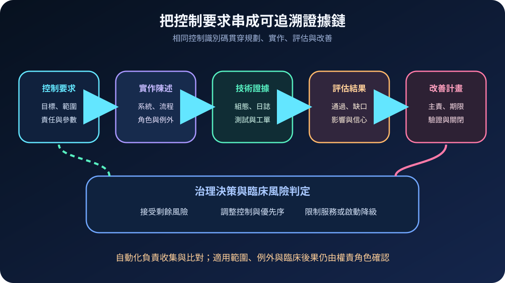
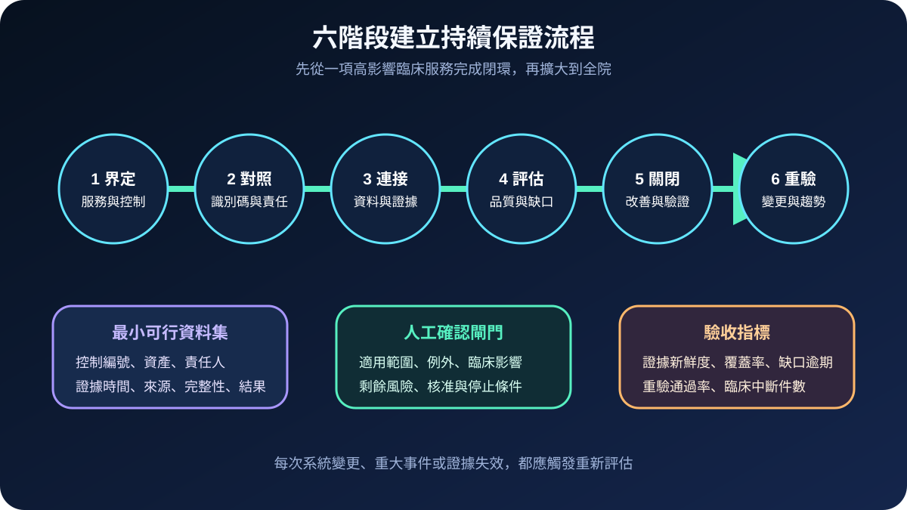
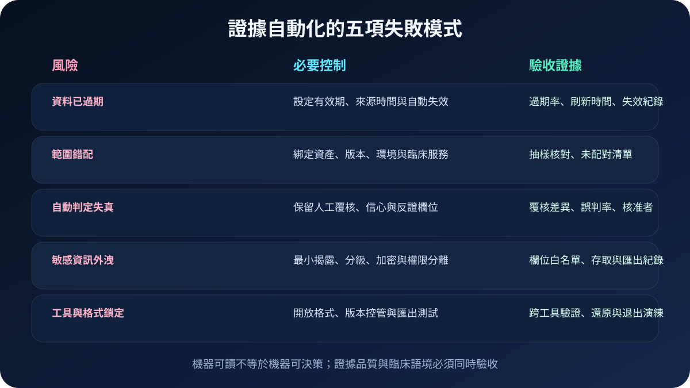

醫療資安國際觀察 · 2026-11-23
醫療資安證據如何機器可讀：從控制實作到持續評估
作者：Dr. William｜醫療資訊與資安治理實務工作者
醫院的組態、日誌、測試與工單若無法對應同一項控制、資產與責任人，就很難證明控制是否持續有效；機器可讀格式的價值，是縮短對照與更新時間，而不是把風險判定交給工具。
名詞解釋：OSCAL、控制實作與持續保證
OSCAL 是 NIST 建立的開放式機器可讀格式，可表達控制目錄、系統安全計畫、評估計畫、評估結果及改善計畫。控制實作 說明誰在何處以何種方式執行控制；持續保證 則持續確認證據的新鮮度、適用範圍與控制有效性。機器可讀代表可交換、可比對與可更新，不代表工具能自行接受臨床風險。
國際現況與適用邊界
NIST 於 2026 年 6 月發布 SP 800-18 Rev. 2，將系統安全計畫定位為可持續更新的管理工具；OSCAL 1.2.3 於同年 8 月發布，持續改善控制與評估資料的交換能力。美國 HHS OCR 的 Recognized Security Practices 說明，受規範實體可提交至少前十二個月持續運作的安全措施證據，HHS 405(d) HICP 也提供醫療產業控制與實作參考。
法域與適用原則：HHS OCR 的舉證與 HIPAA 執法安排只適用其美國法域；OSCAL 亦是資料模型，不是台灣法定控制清單。台灣醫療機構可參考共同識別碼、持續更新與可追溯評估方法，實際控制與保存要求仍依台灣法規、主管機關、契約及院內風險程序決定。
規劃：先建立一條最小可行證據鏈
範圍可先選一項高影響臨床服務，定義控制編號、資產與版本、責任人、證據來源、刷新頻率、保存期限、例外與停止條件。資安治理單位維護控制對照；系統與臨床單位確認場域及影響；稽核或獨立評估角色驗證證據品質。驗收指標可包含證據新鮮度、控制覆蓋率、未配對資產、缺口逾期、重驗通過率與控制變更造成的臨床中斷。
實作：六階段導入
- 界定：選定服務、系統邊界與高影響控制。
- 對照：統一控制、資產、角色及例外識別碼。
- 連接：匯入組態、日誌、測試、工單與核准紀錄。
- 評估：檢查時間、完整性、適用範圍與反證。
- 關閉：記錄缺口主責、期限、重測與風險接受。
- 重驗：由事件、改版、資產變更或證據失效觸發。

風險：資料可交換不等於判定可信
過期資料可能把已失效控制標示為有效；範圍錯配會把測試結果套到不同版本或場域；自動評分可能忽略臨床替代流程與補償控制。證據庫也可能集中敏感架構、弱點與帳號資訊，並產生工具鎖定。必要控制包括有效期、資產綁定、人工覆核、資料最小化、加密分權、開放格式與退出測試。

可執行清單
- 控制、資產、版本、責任人與證據是否使用一致識別碼？
- 每項證據是否記錄來源、時間、完整性、有效期與適用範圍？
- 自動結果是否保留人工覆核、反證與臨床影響欄位？
- 缺口是否有主責、期限、重測、核准與關閉證據？
- 敏感欄位是否採最小揭露、加密、分權與匯出監測？
- 系統改版、重大事件或證據失效是否會觸發重驗？
- 資料是否能以開放格式匯出並通過跨工具驗證？
來源
- NIST｜SP 800-18 Rev. 2, Developing Security, Privacy, and Cybersecurity Supply Chain Risk Management Plans for Systems（發布：2026-06-30；查閱：2026-11-23）
- NIST｜Open Security Controls Assessment Language（版本：1.2.3；發布：2026-08-06；查閱：2026-11-23）
- HHS 405(d)｜Health Industry Cybersecurity Practices 2023 Edition（版本：2023；查閱：2026-11-23）
- HHS OCR｜Recognized Security Practices（查閱：2026-11-23）
內容說明
本文依健康台灣深耕計畫相關治理內容整理，並參考 NIST 與 HHS 官方資料，說明機器可讀控制、持續評估與改善證據的治理方式；不把美國法域的舉證安排或 NIST 資料模型視為台灣醫療機構的直接法定義務，也不取代主管機關要求、獨立稽核或臨床風險判定。